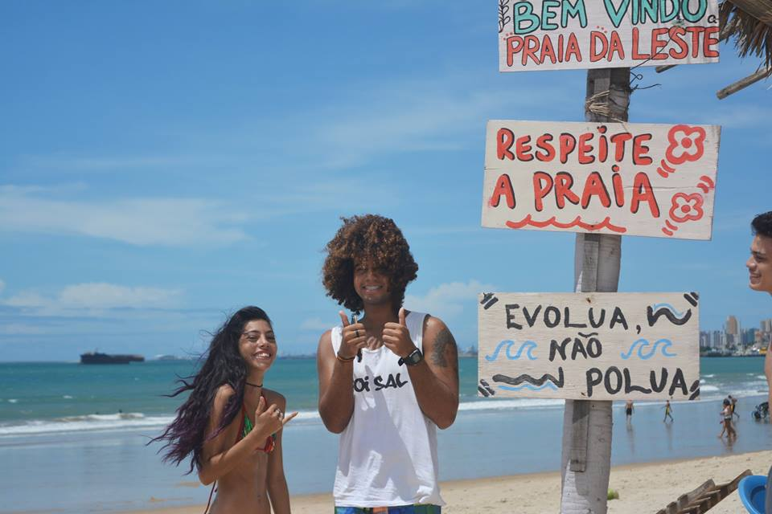

O Coletivo Natora é um projeto social que vem fazendo ações sociais no bairro Carlito Pamplona – Pirambu/Fortaleza – CE, trabalhando com o que temos para as crianças e jovens da nossa comunidade, criando novas experiências com oficinas, campeonato de travinha, cinenatora, apresentações culturais, batalha da castanhola, brincadeiras, entre outros eventos. Trabalhamos não só com as crianças, mas com o público em geral levando uma mensagem de resistência e paz.
Surgimos com a ocupação da Praça da Castanhola que está localizada no bairro Carlito Pamplona – Pirambu/Fortaleza – CE. A praça estava abandonada e sem nenhuma estrutura, com a ocupação começaram as atividades do Coletivo, a princípio com oficina de graffiti e stencil e plantação de mudas.
Cine Natora
O Cine Natora busca oferecer cultura entretenimento e informação a partir da exibição de filmes e realização de debates, com animações, curtas de artistas locais e do Brasil, para a comunidade. Além disso, pretendemos oferecer sessões temáticas com assuntos que irão ser construídos em diálogo com os/as moradores/as do local.

VER MAIS
Campeonato de Travinha Natora Champions League
O jogo não é um privilégio, mas um direito fundamental das crianças, de acordo com a Convenção dos Direitos da Criança. Portanto, o projeto Natora Champions League tem como objetivo incentivar esse esporte muito presente nas periferias trazendo benefícios como saúde, socialização, responsabilidade, inteligência e diversão. Uma brincadeira de rua que anima e muda a rotina da criançada.
VER MAIS
Sarau NatorArte
O objetivo do projeto NatorArte é marcar encontros semanais com jovens e crianças da comunidade para criação e recitação de poesias, rimas, músicas, exposições fotográficas e manifestações culturais em geral.